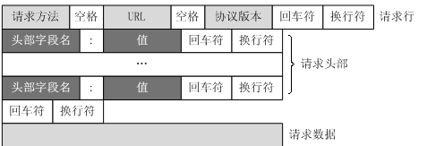
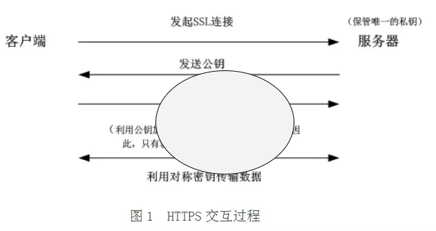

一、http请求报文
一个HTTP请求报文由4个部分组成
- 请求行,由请求方法字段、URL字段和HTTP协议版本字段3个字段组成，它们用空格分隔:HTTP协议的请求方法有GET、POST、HEAD、PUT、DELETE、OPTIONS、TRACE、CONNECT.GET方法要求服务器将URL定位的资源放在响应报文的数据部分，回送给客户端
- 请求头部:请求头部由关键字/值对组成，每行一对，关键字和值用英文冒号“:”分隔。请求头部通知服务器有关于客户端请求的信息，典型的请求头有： User-Agent：产生请求的浏览器类型。
Accept：客户端可识别的内容类型列表。
Host：请求的主机名，允许多个域名同处一个IP地址，即虚拟主机。 - 空行:最后一个请求头之后是一个空行，发送回车符和换行符，通知服务器以下不再有请求头。
- 请求数据:请求数据不在GET方法中使用，而是在POST方法中使用。POST方法适用于需要客户填写表单的场合。与请求数据相关的最常使用的请求头是Content-Type和Content-Length。
二、http响应报文
- HTTP响应也由三个部分组成，分别是：
http响应状态码:
1xx：指示信息–表示请求已接收，继续处理。 2xx：成功–表示请求已被成功接收、理解、接受。
3xx：重定向–要完成请求必须进行更进一步的操作。
4xx：客户端错误–请求有语法错误或请求无法实现。
5xx：服务器端错误–服务器未能实现合法的请求。 - 常见状态代码、状态描述的说明如下。
200 OK：客户端请求成功。
400 Bad Request：客户端请求有语法错误，不能被服务器所理解。
401 Unauthorized：请求未经授权，这个状态代码必须和WWW-Authenticate报头域一起使用。
403 Forbidden：服务器收到请求，但是拒绝提供服务。
404 Not Found：请求资源不存在，举个例子：输入了错误的URL。
500 Internal Server Error：服务器发生不可预期的错误。
503 Server Unavailable：服务器当前不能处理客户端的请求，一段时间后可能恢复正常，举个例子：HTTP/1.1 200 OK（CRLF）。
三、HTTP请求GET和POST的区别
- GET提交：请求的数据会附在URL之后（就是把数据放置在HTTP协议头＜request-line＞中），以?分割URL和传输数据，多个参数用&连接;例如：login.action?name=hyddd&password=idontknow&verify=%E4%BD%A0 %E5%A5%BD。如果数据是英文字母/数字，原样发送，如果是空格，转换为+，如果是中文/其他字符，则直接把字符串用BASE64加密，得出如： %E4%BD%A0%E5%A5%BD，其中％XX中的XX为该符号以16进制表示的ASCII。
POST提交：把提交的数据放置在是HTTP包的包体＜request-body＞中。
因此，GET提交的数据会在地址栏中显示出来，而POST提交，地址栏不会改变 - 传输数据的大小：首先声明,HTTP协议没有对传输的数据大小进行限制，HTTP协议规范也没有对URL长度进行限制。 而在实际开发中存在的限制主要有：
GET:特定浏览器和服务器对URL长度有限制，例如IE对URL长度的限制是2083字节(2K+35)。对于其他浏览器，如Netscape、FireFox等，理论上没有长度限制，其限制取决于操作系统的支持。因此对于GET提交时，传输数据就会受到URL长度的限制。
POST:由于不是通过URL传值，理论上数据不受限。但实际各个WEB服务器会规定对post提交数据大小进行限制，Apache、IIS6都有各自的配置。 - 安全性：POST的安全性要比GET的安全性高。注意：这里所说的安全性和上面GET提到的“安全”不是同个概念。上面“安全”的含义仅仅是不作数据修改，而这里安全的含义是真正的Security的含义，比如：通过GET提交数据，用户名和密码将明文出现在URL上，因为(1)登录页面有可能被浏览器缓存， (2)其他人查看浏览器的历史纪录，那么别人就可以拿到你的账号和密码了，
四、TCP和HTTP
- TCP连接
- TPC/IP协议是传输层协议，主要解决数据如何在网络中传输
- 建立起一个TCP连接需要经过“三次握手“
- 第一次握手：客户端发送syn包(syn=j)到服务器，并进入SYN_SEND状态，等待服务器确认；第二次握手：服务器收到syn包，必须确认客户的SYN（ack=j+1），同时自己也发送一个SYN包（syn=k），即SYN+ACK包，此时服务器进入SYN_RECV状态；第三次握手：客户端收到服务器的SYN＋ACK包，向服务器发送确认包ACK(ack=k+1)，此包发送完毕，客户端和服务器进入ESTABLISHED状态，完成三次握手。
- 在TCP/IP参考模型中，去掉了OSI参考模型中的会话层和表示层，分为四层协议：应用层，传输层，网络互联层，主机到网络
- http连接
- HTTP是应用层协议，主要解决如何包装数据
- HTTP连接最显著的特点是客户端发送的每次请求都需要服务器回送响应，在请求结束后，会主动释放连接。从建立连接到关闭连接的过程称为“一次连接“。
- 由于HTTP在每次请求结束后都会主动释放连接，因此HTTP连接是一种“短连接”，要保持客户端程序的在线状态，需要不断地向服务器发起连接请求
五、HTTPS安全传输
- 由于http有很多的缺点，例如通信使用明文，内容可能会被盗窃。不验证通信方身份，因此有可能遭遇伪装。无法验证报文的完整性，所以有可能已经遭到篡改。为了解决这些不安全问题，出现了https
- HTTPS并不是取代了HTTP的一种新协议，只是HTTP通信接口部分用SSL（Secure Socket Layer，安全套接层）和TLS（Transport Layer Security，安全传输层协议）协议代替而已
 - 缺点：
- 慢，HTTPS需要做服务器，客户端的加密解密处理，所以消耗CPU和内存等硬件资源。
- 而且SSL通信部分消耗网络资源，并且其对通信进行处理，所以时间大大加长。非敏感信息并不需要使用HTTP，只有在访问个人信息等敏感数据才利用HTTPS。
- 买证书也要钱，一些小网站买不起。